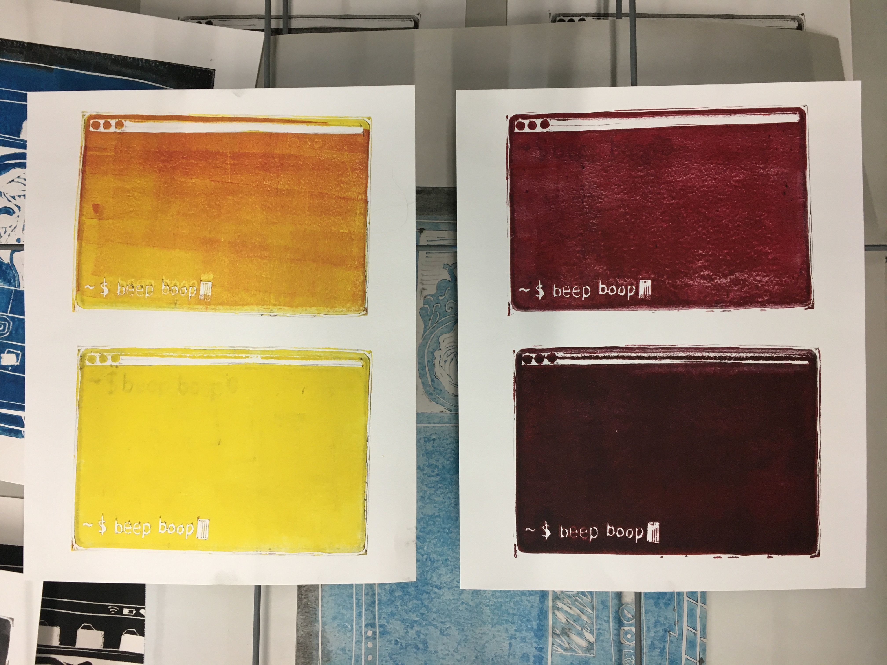

Using complex CSS to create features that delight
Introduction
Hot take, but I love CSS. It’s progressed a lot in the past few years, and I think it’s really cool that you can do so much with a styling language, which is also arguably Turing-complete.
What I don’t absolutely love are SVGs. They’re a necessary evil on the frontend, and they’re extremely powerful—but they are so, so finicky, and when developing with them, I often find myself resorting to the “change-one-thing-and-see-what-happens” style of development until I grok the manipulation patterns of a specific shape or stroke. There are SVG manipulation libraries out there (for example: Framer, which is super cool but paid), but often if you have a very niche, boutique feature, it is worth just biting the bullet and implementing it in straight SVG.
Nerdin’ out on SVGs: the most finicky thing to delight you this year
This year, I had the opportunity to lead the charge on a few “delight” features at Studio: one was a spinning profile picture timer for our new Studio Sessions feature; the other was a class-specific feature in Simone Giertz’s Studio class that helped students come up with random build ideas. It’s been lovely seeing the response to these features, and a nice reminder that going the extra mile to create that computed magic can really pay off.
Aside: React x SVGs
All of these features were developed using TypeScript React and Vanilla Extract, a Tailwind-like CSS framework. Generally, clean react patterns are all about state management and storing state in variables.
Developing with SVGs involves a lot of state management, but
because of the nature of SVGs, it feels a lot more like developing
with pure HTML and Javascript than developing with React. There’s
a lot of direct DOM manipulation using ref objects
(think element.setAttribute), which can feel janky or
unclean compared to React’s pure-code state management.
The functions you write to create this complex magic in the
frontend will be very long; there is no way around that. They’ll
also have to make some use of lots of number crunching and some
magic numbers. If you use a lot of SVG manipulation in your app,
you may want to consider creating helper functions to manage basic
operations. Each of these features, for example, had a very long
util file to house all the functions we use and
separate them out so that they were testable.
In my experience, there just isn’t a substitute for working with SVGs directly if you’re trying to create bespoke elements and experiences. And this is the case even if you’re developing complex visualizations, say, with D3.js, which relies on underlying SVG manipulation as well.
Conclusion: Long Live the Frontend
My heart is in the frontend, I can say that. Though I’m a proud generalist and therefore a fullstack dev, there is so much joy and richness in developing complex features on the frontend.
I feel that there’s an unfortunate stereotype that frontend devs are less rigorous than backend or fullstack devs. Through projects like these, my hope is that you understand how much thought, iteration, and algorithmic thinking goes into making something colorful, delightful, and joyous that users love to use!